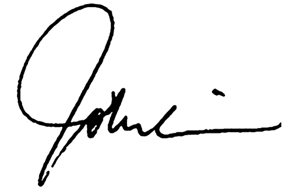

审视自身及团队的“变革曲线”
说到变革和转型，我们大都会经历从惊讶、怀疑、接受到认可的曲线变化，而这根曲线也会因每个人的主观认知及客观环境的不同而产生差异。在文化转型的攻坚阶段，作为公司的中坚力量，我们每一位管理者可以再次审视一下自己及团队的这根变革曲线，“诊断”可能存在的问题。
从小处着手，让改变发生
变革必然是一个迂回的过程，如果发现团队成员变革动力不足甚至对未来产生怀疑的时候，我们不妨换一个角度，从身边的小事着手，寻找可以让大家感觉到切实变化的突破点，并大胆尝试去改变。一件件“小事”的成功，可以积少成多，汇聚成积极的能量，帮助身边的人真正感受到改变的发生和益处，让大家真正感受到变革的容“易”。
